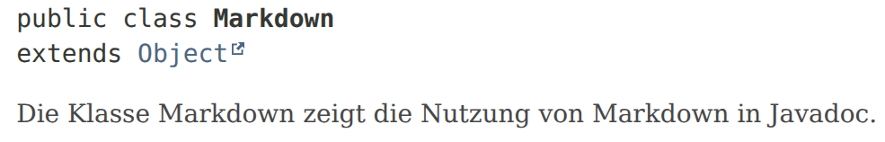
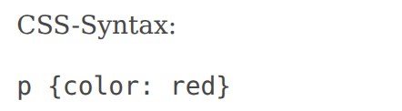
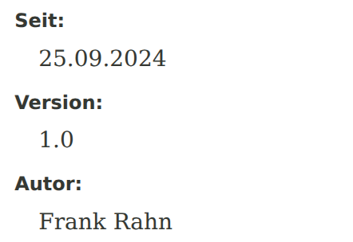
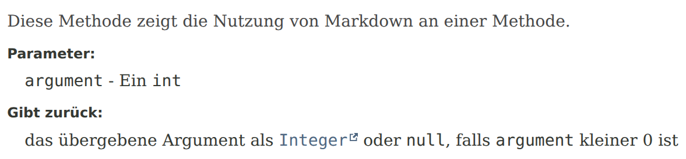

Changelog Java Versions
Eine Auflistung der Änderungen in Java aus Sicht eines Entwicklers
Erstellt von Frank Rahn
Abstrakt
Die Programmiersprache Java entwickelt sich von Version zu Version weiter. In dieser Präsentation werden die wichtigsten Änderungen aus Sicht eines Entwicklers dargestellt.
Es werden Programmierkenntnisse ab der Java Version 7 vorausgesetzt.
Tastenkombinationen
- Space oder N springt zur nächsten Folie
- P springt zur vorherigen Folie
- F zeigt die Präsentation im Vollbildmodus
- B zeigt die Pause Folie
- Esc oder O zeigt die Übersicht der Folien
- S wird die Speakers-Ansicht gestartet
Über mich
Kontakt
Zur Person
Seit 1992 arbeite ich als freiberuflicher unabhängiger Softwarearchitekt und -consultant.
Seitdem beschäftige ich mich mit dem Entwurf und der Realisierung von Anwendungen und verfüge über umfangreiche Erfahrungen in der Integration von Anwendungen.
Meine Einsatzbereiche
- Softwarearchitekturen mit Java-Technologien
- mit Spring Framework, Boot, Batch, …
-
Integration von unternehmensübergreifenden IT-Systemen
- per REST, SOAP, …
- Entwicklung von großen und komplexen Systemen
- Performance-Analysen mit entsprechender Optimierung
Java 8
Informationen
Release im März 2014
Ist eine LTS-Version
Support Ende im Januar 2019
Die wichtigsten Änderungen
- Lambda
- Default und statische Methoden in Interfaces
- Stream API
- Bulk Operations auf Collections
- Date-Time API
- …
Lambda und Methodenreferenz
package java8;
import java.util.List;
public class Lambda {
public void printList1(List<String> strings) {
strings.forEach(
s -> {
System.out.println(s);
}
);
}
public void printList2(List<String> strings) {
strings.forEach(System.out::println);
}
}
Default und statische Methoden in Interfaces
package java8;
public interface DefaultStaticMethod {
void abstractMethod();
default void defaultMethod() {
System.out.println("Call defaultMethod");
abstractMethod();
}
static void staticMethod() {
System.out.println("Call staticMethod");
}
}
Default und statische Methoden in Interfaces
package java8;
public class DefaultStaticMethodImpl implements DefaultStaticMethod {
@Override
public void abstractMethod() {
System.out.println("Call abstractMethod");
DefaultStaticMethod.staticMethod();
}
}
Stream API
package java8;
import java.util.stream.IntStream;
import java.util.stream.LongStream;
import java.util.stream.Stream;
public class Streams {
public void process() {
Stream<String> streamEmpty = Stream.empty();
Stream<String> streamOfArray = Stream.of("a", "b", "c");
Stream<String> streamIterated =
Stream.iterate(40, n -> n + 2).limit(20);
IntStream intStream = IntStream.range(1, 3);
LongStream longStream = LongStream.rangeClosed(1, 3);
}
}
Bulk Operations auf Collections
package java8;
import java.util.List;
public class BulkOperation {
public long process(List<String> strings) {
return
strings
.stream()
.filter(s -> s.startsWith("test"))
.sorted()
.map(String::length)
.count();
}
}
Date-Time API
package java8;
import java.time.LocalDate;
import java.time.LocalDateTime;
public class DateTime {
public boolean process() {
LocalDate birthday = LocalDate.of(1967, 5, 5);
LocalTime now = LocalTime.now();
LocalDateTime today = LocalDateTime.now();
LocalDateTime tomorrow = today.plusDays(1);
return tomorrow.isAfter(today);
}
}
Java 9
Informationen
Release im September 2017
Support Ende im März 2018
Die wichtigsten Änderungen 1/2
- PKCS12
- Modulsystem (Jigsaw)
- JShell
- Convenience Factory Methods for Collections
- Erweiterung Optional
- Private Methoden in Interfaces
Die wichtigsten Änderungen 2/2
- Process API
- Flow API
- Stream API
- Variable Handles
- Platform Logging API and Service
- …
Modulsystem
module changelog.java.version.java8 {
exports java8;
}
module changelog.java.version.java9 {
requires changelog.java.version.java8;
exports java9;
}
JShell
$ jshell
| Welcome to JShell -- Version 11.0.8
| For an introduction type: /help intro
jshell> 1 + 2
$1 ==> 3
jshell> System.out.println($1)
3
jshell> var num = $1
num ==> 3
jshell> /exit
| Goodbye
$
Convenience Factory Methods for Collections
$ jshell
| Welcome to JShell -- Version 11.0.8
| For an introduction type: /help intro
jshell> Set.of("a", "b", "c")
$1 ==> [a, b, c]
jshell> $1.getClass()
$2 ==> class java.util.ImmutableCollections$SetN
jshell> List.of("a", "b", "c")
$3 ==> [a, b, c]
jshell> $3.getClass()
$4 ==> class java.util.ImmutableCollections$ListN
jshell> Map.ofEntries(
...> Map.entry("key1", new Object()),
...> Map.entry("key2", new Object())
...> )
$5 ==> {key2=java.lang.Object@335eadca, key1=java.lang.Object@210366b4}
jshell> $5.getClass()
$6 ==> class java.util.ImmutableCollections$MapN
Erweiterung Optional
package java9;
import java.util.Optional;
import java.util.stream.Stream;
public class Optional9 {
public <T> Stream<T> process(Optional<T> valueOpt) {
T a = valueOpt.or(
() -> null
).get();
valueOpt.ifPresentOrElse(t -> {
System.out.println("not empty");
}, () -> {
System.out.println("empty");
});
return valueOpt.stream();
}
}
Private Methoden in Interfaces
package java9;
public interface PrivatMethod {
default void defaultMethod() {
System.out.println("Call defaultMethod");
privateMethod();
}
private void privateMethod() {
System.out.println("Call privateMethod");
privateStaticMethod();
}
private static void privateStaticMethod() {
System.out.println("Call privateStaticMethod");
}
}
Die privaten Methoden können außerhalb des Interfaces nicht aufgerufen werden
Process API
$ jshell
| Welcome to JShell -- Version 11.0.8
| For an introduction type: /help intro
jshell> var ph = ProcessHandle.current()
ph ==> 48332
jshell> ph.pid()
$2 ==> 48332
jshell> ph.parent()
$3 ==> Optional[54948]
jshell> ph.children()
$4 ==> java.util.stream.ReferencePipeline$2@185d8b6
jshell> var pi = ph.info()
pi ==> [user: Optional[frank], cmd: /usr/lib/jvm/adoptop ... alTime: Optional[PT0.27S]]
jshell> pi.user()
$6 ==> Optional[frank]
jshell> pi.commandLine()
$7 ==> Optional[/usr/lib/jvm/adoptopenjdk-11-hotspot-amd64/bin/java -agentlib:jdwp=transport=dt_socket,address=localhost:41721 jdk.jshell.execution.RemoteExecutionControl 43829]
jshell> pi.command()
$8 ==> Optional[/usr/lib/jvm/adoptopenjdk-11-hotspot-amd64/bin/java]
Flow API
Die API basiert auf der Reactive-Stream Initiative
package java9;
import java.util.List;
import java.util.concurrent.CountDownLatch;
import java.util.concurrent.Flow;
import java.util.concurrent.Flow.Subscription;
import java.util.concurrent.SubmissionPublisher;
public class Flows implements Flow.Subscriber<String> {
private Subscription subscription;
@Override
public void onSubscribe(Subscription subscription) {
this.subscription = subscription;
System.out.println("Starting ...");
this.subscription.request(1);
}
@Override
public void onNext(String item) {
System.out.println(item);
this.subscription.request(1);
}
@Override
public void onError(Throwable throwable) {
throwable.printStackTrace();
}
static CountDownLatch countDown = new CountDownLatch(1);
@Override
public void onComplete() {
System.out.println("Finished");
countDown.countDown();
}
public static void main(String[] args) throws InterruptedException {
SubmissionPublisher<String> publisher = new SubmissionPublisher<>();
publisher.subscribe(new Flows());
List.of("a", "b", "c", "d").forEach(publisher::submit);
publisher.close();
countDown.await();
}
}
Stream API
$ jshell
| Welcome to JShell -- Version 11.0.8
| For an introduction type: /help intro
jshell> Stream.of(10, 42, 4711)
$1 ==> java.util.stream.ReferencePipeline$Head@548e7350
jshell> $1.dropWhile(i -> i < 50).forEach(System.out::println)
4711
jshell> Stream.of(10, 42, 4711)
$3 ==> java.util.stream.ReferencePipeline$Head@5a8806ef
jshell> $3.takeWhile(i -> i < 50).forEach(System.out::println)
10
42
jshell> IntStream.iterate(1, i -> i < 4711, i -> i*42).forEach(System.out::println)
1
42
1764
jshell> Stream.ofNullable(null)
$5 ==> java.util.stream.ReferencePipeline$Head@7f13d6e
jshell> $5.forEach(System.out::println)
jshell> Stream.ofNullable("Frank")
$7 ==> java.util.stream.ReferencePipeline$Head@10bbd20a
jshell> $7.forEach(System.out::println)
Frank
Variable Handles
public class VariableHandles {
private int testVariable = 4711;
public static void main(String[] args) throws NoSuchFieldException, IllegalAccessException {
VariableHandles variableHandles = new VariableHandles();
// Hole ein Handle für das private Attribut dieser Klasse
VarHandle varHandleForTestVariable =
MethodHandles
.privateLookupIn(VariableHandles.class, MethodHandles.lookup())
.findVarHandle(VariableHandles.class, "testVariable", int.class);
// Lesender Zugriff
Object testVariableValue =
varHandleForTestVariable.get(variableHandles);
System.out.println(testVariableValue);
// Schreibender Zugriff
varHandleForTestVariable.set(variableHandles, 15);
testVariableValue =
varHandleForTestVariable.get(variableHandles);
System.out.println(testVariableValue);
}
}
Platform Logging API and Service
import static java.lang.System.Logger.Level.INFO;
import java.lang.System.Logger;
public class SystemLogger {
private static final Logger LOGGER =
System.getLogger(SystemLogger.class.getName());
public static void main(String[] args) {
if (LOGGER.isLoggable(INFO)) {
LOGGER.log(INFO, "Info in {0}", "If-Abfrage");
}
LOGGER.log(INFO, () -> "Info in %s".formatted("Lambda"));
}
}
Platform Logging API and Service
Ausgabe:
Okt. 02, 2022 2:44:29 PM java9.SystemLogger main INFORMATION: Info in If-Abfrage Okt. 02, 2022 2:44:29 PM java9.SystemLogger main INFORMATION: Info in Lambda
Java 10
Informationen
Release im März 2018
Support Ende im September 2018
Die wichtigsten Änderungen
- Docker Support
- Application Class-Data Sharing
- Local-Variable Type Inference
- Erweiterung Optional
- …
Local-Variable Type Inference
package java10;
import java.util.ArrayList;
public class LocalVariable {
public long process() {
var list = new ArrayList<String>();
list.add("Frank");
var stream = list.stream();
return stream.count();
}
}
Erweiterung Optional
$ jshell
| Welcome to JShell -- Version 11.0.8
| For an introduction type: /help intro
jshell> Optional.empty().orElseThrow()
| Exception java.util.NoSuchElementException: No value present
| at Optional.orElseThrow (Optional.java:382)
| at (#1:1)
jshell> Optional.of(true).orElseThrow()
$2 ==> true
Java 11
Informationen
Release im September 2018
Ist eine LTS-Version
Support Ende im September 2022
Die wichtigsten Änderungen
- Entfernen von JAX-WS, SAAJ, JAXB, JAF, JTA,
CORBA und der Common Annotations - API Erweiterungen
- HTTP Client
- Local-Variable Syntax für Lambda Parameters
- Shebang Dateien
- Sourcecode Dateien ausführen
- …
Entfernen von Java EE Modulen
JAX-WS (javax.xml.ws)
jakarta.xml.ws : jakarta.xml.ws-api : 2.3.3
com.sun.xml.ws : jaxws-rt : 2.3.3
SAAJ (javax.xml.soap)
jakarta.xml.soap : jakarta.xml.soap-api : 1.4.2
com.sun.xml.messaging.saaj : saaj-impl : 1.5.2
JAXB (javax.xml.bind)
jakarta.xml.bind : jakarta.xml.bind-api : 2.3.3
org.glassfish.jaxb : jaxb-runtime : 2.3.3
Entfernen von Java EE Modulen
JAF (javax.activation)
jakarta.activation : jakarta.activation-api : 1.2.2
JTA (javax.transaction)
jakarta.transaction : jakarta.transaction-api : 1.3.3
JPA (javax.persistence)
jakarta.persistence : jakarta.persistence-api : 2.2.3
Entfernen von Java EE Modulen
Validation (javax.validation)
jakarta.validation : jakarta.validation-api : 2.0.2
Common Annotations (javax.annotation)
jakarta.annotation : jakarta.annotation-api : 1.3.5
Expression Language (javax.el)
org.glassfish : jakarta.el : 3.0.3
Entfernen von Java EE Modulen
MAIL (javax.mail)
jakarta.mail : jakarta.mail-api : 1.6.5
JMS (javax.jms)
jakarta.jms : jakarta.jms-api : 2.0.3
CORBA (javax.rmi.CORBA)
Z. B. Eclipse GlassFisch oder WildFly
API Erweiterungen (String)
$ jshell
| Welcome to JShell -- Version 11.0.8
| For an introduction type: /help intro
jshell> "hello".isBlank()
$1 ==> false
jshell> " ".isBlank()
$2 ==> true
jshell> " Hello World ".strip()
$3 ==> "Hello World"
jshell> " Hello World ".strip()
$4 ==> "Hello World"
jshell> " Hello World ".stripTrailing()
$5 ==> " Hello World"
jshell> " Hello World ".stripLeading()
$6 ==> "Hello World "
jshell> " ".strip()
$7 ==> ""
jshell> "aaa\nbbb\nccc".lines().forEach(System.out::println)
aaa
bbb
ccc
jshell> "-".repeat(20)
$8 ==> "--------------------"
API Erweiterungen (Character)
$ jshell
| Welcome to JShell -- Version 11.0.8
| For an introduction type: /help intro
jshell> Character.toString(100)
$1 ==> "d"
jshell> Character.toString(45)
$2 ==> "-"
API Erweiterungen (Files)
package java11;
import java.io.IOException;
import java.net.URI;
import java.nio.file.Files;
import java.nio.file.Path;
import java.nio.file.Paths;
import java.nio.file.StandardOpenOption;
public class WriteString {
public String process(URI uri) throws IOException {
Path filePath = Paths.get(uri);
Files.writeString(filePath, "Hello World",
StandardOpenOption.APPEND);
return Files.readString(filePath);
}
}
HTTP Client
package java11;
import java.net.URI;
import java.net.http.HttpClient;
import java.net.http.HttpRequest;
import java.net.http.HttpResponse;
import java.net.http.HttpResponse.BodyHandlers;
import java.util.concurrent.CompletableFuture;
public class HTTPClient {
public CompletableFuture<String> process(String uri) {
HttpClient client = HttpClient.newHttpClient();
HttpRequest request = HttpRequest.newBuilder()
.uri(URI.create(uri)).build();
return client.sendAsync(request,
BodyHandlers.ofString())
.thenApply(HttpResponse::body);
}
}
Local-Variable Syntax
package java11;
import java.util.function.BiConsumer;
public class LocalVariable {
public BiConsumer<String, String> process() {
return (var x, var y) -> x.startsWith(y);
}
}
Shebang Dateien
Inhalt der Datei hw:
#!/usr/bin/java --source 11
public class HelloWorld {
public static void main (String... args) {
System.out.println("Hello World");
}
}
Ausgabe:
$ ./hw Hello World $
Sourcecode Dateien ausführen
public class HelloWorld {
public static void main(String[] args) {
System.out.println("Hello World");
}
}
Ausgabe:
$ java HelloWorld.java Hello World $
Java 12
Informationen
Release im März 2019
Support Ende im September 2019
Die wichtigsten Änderungen
- Unicode 11 (Japanese New Era)
- …
Java 13
Informationen
Release im September 2019
Support Ende im März 2020
Die wichtigsten Änderungen
- Application Class Data Sharing
- Unicode 12.1
- …
Java 14
Informationen
Release im März 2020
Support Ende im September 2020
Die wichtigsten Änderungen
- Mehr Informationen bei NullPointerException
- Switch Expressions
- …
Switch Expressions
package java14;
import java.time.DayOfWeek;
public class SwitchExpressions {
public int process(DayOfWeek day) {
return switch (day) {
case MONDAY, FRIDAY, SUNDAY -> 6;
case TUESDAY -> 7;
case THURSDAY, SATURDAY -> 8;
default -> {
yield f();
}
};
}
private int f() {
return 4711;
}
}
Java 15
Informationen
Release im September 2020
Support Ende im März 2021
Die wichtigsten Änderungen
- Edwards-Curve-Algorithmus für digitale
Signaturen (EdDSA) - Entfernen der Nashorn-JavaScript-Engine
- Text Blocks
- …
Text Blocks
package java15;
public class TextBlocks {
private String html = """
<html>
<body>
<p>Hello "world"!</p>
</body>
</html>
""";
private String sql = """
SELECT *
FROM PERSON p \
WHERE p.CITY = '%s' \s
""".formatted("Köln");
}
Java 16
Informationen
Release im März 2021
Support Ende im September 2021
Die wichtigsten Änderungen
- Records
- Pattern matching für
instanceof - OpenJDK wurde nach GitHub umgezogen
- Alpine Linux wird unterstützt
- …
Records
package java16;
public class Records {
public record Data(String a, Integer b) {}
public static void main(String[] args) {
Data data = new Data("Test", 5711);
Data data2 = new Data("Test", 5711);
System.out.println(data.a());
System.out.println(data.b());
System.out.println(data.toString());
System.out.println(data.hashCode());
System.out.println(data.equals(data2));
}
}
Records
package java16;
public class Records {
public record Data(String a, Integer b) {}
public record NamedTuple<T>(String name, T... values) {}
public static void main(String[] args) {
Data data = new Data("Test", 5711);
Data data2 = new Data("Test", 5711);
System.out.println(data.a());
System.out.println(data.b());
System.out.println(data.toString());
System.out.println(data.hashCode());
System.out.println(data.equals(data2));
var tuple = new NamedTuple<>("Geld", 0.5, 3.14);
System.out.println(tuple);
}
}
Records
package java16;
public class Records {
public record Data(String a, Integer b) {}
public record NamedTuple<T>(String name, T... values) {}
public record Range(int low, int high) {
public Range() {
this(Integer.MIN_VALUE, Integer.MAX_VALUE);
}
public Range {
if (low > high) {
throw new IllegalArgumentException("low greater high");
}
}
public int length() {
return high - low;
}
}
public static void main(String[] args) {
Data data = new Data("Test", 5711);
Data data2 = new Data("Test", 5711);
System.out.println(data.a());
System.out.println(data.b());
System.out.println(data.toString());
System.out.println(data.hashCode());
System.out.println(data.equals(data2));
var tuple = new NamedTuple<>("Geld", 0.5, 3.14);
System.out.println(tuple);
var range = new Range();
System.out.println(range);
System.out.println(range.length());
new Range(2, 1);
}
}
Pattern matching für instanceof
package java16;
public class PatternMatching {
public void process(Object obj) {
if (obj instanceof String s) {
System.out.println("obj is String:" + s);
}
return obj instanceof String s && s.isBlank();
}
}
Java 17
Informationen
Release im September 2021
Ist eine LTS-Version
Support Ende im September 2030
Die wichtigsten Änderungen
- Erweiterung der PRNG (
RandomGenerator) - Entfernt RMI Activation
- Sealed Classes
- …
Sealed Classes
package java17;
public abstract sealed class Abbildung
permits Kreis, Rechteck {
// ...
}
public final class Kreis extends Abbildung {
// ...
}
public sealed class Rechteck extends Abbildung
permits Quadrat {
// ...
}
public non-sealed class Quadrat extends Rechteck {
// ...
}
Java 18
Informationen
Release im März 2022
Support Ende im September 2022
Die wichtigsten Änderungen
- UTF-8 ist Standardzeichensatz
- Simple Web Server
- Code Snippets in der JavaDoc API Dokumentation
- …
Simple Web Server
$ jwebserver -b 127.0.0.2 -p 8080 -d /tmp -o verbose
Serving /tmp and subdirectories on 127.0.0.2 port 8080
URL http://127.0.0.2:8080/
var server = SimpleFileServer.createFileServer(
new InetSocketAddress(8080), Path.of("tmp"), OutputLevel.Verbose);
server.start();
Code Snippets in Javadoc
package java18;
/**
* ...
*
* {@snippet :
* System.out.println("Hello World!");
* }
*
* {@snippet file="java18/HelloWorld.java" region="output"}
*/
public class HelloWorld {
public static void main(String[] args){
// @start region="output"
System.out.println("Hello World!");
// @end
}
}
Java 19
Informationen
Release im September 2022
Support Ende im März 2023
Die wichtigsten Änderungen
System.out/System.errverwenden
das Standard-Encoding des Betriebssystems- Preallocated
HashMap/HashSet - …
System.out / System.err
Mit den folgenden VM-Optionen kann die
Ausgabe wieder auf UTF-8 umgestellt werden:
-Dstdout.encoding=utf8 -Dstderr.encoding=utf8
Es kann auch eine Umgebungsvariable
definiert werden:
_JAVA_OPTIONS="-Dstdout.encoding=utf8 -Dstderr.encoding=utf8"
Preallocated HashMap / HashSet
Bei den HashMap's kann die Anzahl der Elemente
einer Collection angegeben werden:
val map = new HashMap<String, String>(4711);
Allerdings muss beachtet werden, das die Collection mit Default-Load-Factor von 0,75 initialisiert wird.
D. H. die Collection wird tatsächlich mit
0,75 · 4711 = 3533 Elemente
initialisiert. Wird diese
Größe überschritten, wird die Collection verdoppelt und ein Rehash durchgeführt.
Java 20
Informationen
Release im März 2023
Support Ende im September 2023
Keine Änderungen
Es wurden 7 Features hinzugefügt, die aber alle entweder Previews oder im Incubator sind.
Java 21
Informationen
Release im September 2023
Ist eine LTS-Version
Support Ende im September 2028
Die wichtigsten Änderungen
- Sequenced Collections
- Pattern Matching for switch
- Record Patterns
- Virtual Threads
- Dynamisches Laden eines Agenten
(z. B. Profilers) deaktiviert - Key Encapsulation Mechanism (KEM) API
- Windows 32-bit ist deprecated
Sequenced Collections
package java21;
import java.util.LinkedHashSet;
import java.util.LinkedList;
import java.util.SequencedCollection;
public class SequencedCollections {
private final SequencedCollection<Integer> list
= new LinkedList<>();
private final SequencedCollection<Integer> set
= new LinkedHashSet<>();
public void process() {
list.addFirst(4713);
list.addFirst(4711);
list.addLast(4715);
set.addAll(list);
var first = list.get(0);
var last = list.get(list.size() - 1);
first = set.iterator().next();
set.remove(first);
}
Sequenced Collections
package java21;
import java.util.LinkedHashSet;
import java.util.LinkedList;
import java.util.SequencedCollection;
public class SequencedCollections {
private final SequencedCollection<Integer> list
= new LinkedList<>();
private final SequencedCollection<Integer> set
= new LinkedHashSet<>();
public void process() {
list.addFirst(4713);
list.addFirst(4711);
list.addLast(4715);
set.addAll(list);
var first = list.getFirst();
var last = list.getLast();
first = set.removeFirst();
}
}
Pattern Matching for switch
public class PatternMatching {
private final String pi = String.valueOf(Math.PI);
private String formatterPatternSwitch(Object obj) {
return switch (obj) {
case null -> "Object is null";
case Integer i -> String.format("int %d", i);
case Long l -> String.format("long %d", l);
case Double d -> String.format("double %f", d);
case String s -> String.format("String %s", s);
default -> String.format("Object %s", obj);
};
}
public void process() {
println(formatterPatternSwitch(null));
println(formatterPatternSwitch(Integer.valueOf("3")));
println(formatterPatternSwitch(Long.valueOf("3")));
println(formatterPatternSwitch(Double.valueOf(pi)));
println(formatterPatternSwitch(pi));
println(formatterPatternSwitch(new BigDecimal(pi, UNLIMITED)));
}
private void println(Object obj) {
System.out.println(obj);
}
}
Pattern Matching for switch
public class PatternMatching {
private void guardedCaseLabel(String text) {
switch (text) {
case null -> println("Null");
case "Foo", "Bar" -> println("Ok");
case String s when s.equals("yes") -> println("True");
case String s when s.equals("no") -> println("False");
case String s -> println(s);
}
}
public void process() {
guardedCaseLabel(null);
guardedCaseLabel("Foo");
guardedCaseLabel("Bar");
guardedCaseLabel("yes");
guardedCaseLabel("no");
guardedCaseLabel("Hä?");
}
private void println(Object obj) {
System.out.println(obj);
}
}
Pattern Matching for switch
public class PatternMatching {
private void nullAndDefault(String s) {
switch (s) {
case "Text" -> println("Text");
case null, default -> println(s);
}
}
public void process() {
nullAndDefault(null);
nullAndDefault("Text");
nullAndDefault("Blubber");
}
private void println(Object obj) {
System.out.println(obj);
}
}
Record Patterns
Dekonstruierung von Records für Mustervergleiche
public class RecordPatterns {
record X(Integer i) {}
record Value<T1, T2>(T1 first, T2 second) {}
private void guardedPatterns(Object obj) {
if (obj instanceof X(Integer i)) {
System.out.print("i=" + i + ", ");
}
switch (obj) {
case null -> println("Null");
case X(var x) when x > 4 -> println("x > 4");
case X(var x) -> println(x.intValue());
case Value(String a, var b) -> println(a + ": " + b);
default -> println("Hä?");
}
}
public void process() {
guardedPatterns(null);
guardedPatterns(new X(0));
guardedPatterns(new X(5));
guardedPatterns(new Value<>("Test", 5));
guardedPatterns(new Value<>(0, 5));
guardedPatterns(new Object());
}
private void println(Object obj) {
System.out.println(obj);
}
}
Type Patterns
public sealed interface TypePatterns
permits TypePatterns.Enum, TypePatterns.Clazz {
enum Enum implements TypePatterns {A, B}
final class Clazz implements TypePatterns {}
private static void typePatterns(TypePatterns typePatterns) {
switch (typePatterns) {
case Enum.A -> System.out.println("Enum.A");
case Enum.B -> System.out.println("Enum.B");
case Clazz z -> System.out.println("Clazz");
}
}
static void process() {
typePatterns(Enum.A);
typePatterns(Enum.B);
typePatterns(new Clazz());
typePatterns(null);
}
}
Type Patterns
Exception in thread "main" java.lang.NullPointerException
at java.base/java.util.Objects.requireNonNull(Objects.java:233)
at java21.TypePatterns.typePatterns(TypePatterns.java:8)
at java21.TypePatterns.process(TypePatterns.java:19)
at ...
Virtual Threads
public class VirtualThreads {
private static void println(String prefix) {
System.out.printf(
"Thread %s: %d %s %n",
prefix,
System.currentTimeMillis(),
Thread.currentThread());
}
private void sleep() {
println("Started");
try {
Thread.sleep(Duration.ofSeconds(2));
} catch (InterruptedException e) {
throw new RuntimeException(e);
}
println("Ended ");
}
public void process() {
var t1 = Thread.ofVirtual().unstarted(this::sleep);
t1.start();
var t2 = Thread.ofPlatform().start(this::sleep);
try (var executor =
Executors.newVirtualThreadPerTaskExecutor()) {
var future = executor.submit(this::sleep);
t1.join();
t2.join();
future.resultNow();
} catch (InterruptedException e) {
throw new RuntimeException(e);
}
}
}
Virtual Threads
Thread Started: 1696360867033 VirtualThread[#32]
/runnable@ForkJoinPool-1-worker-1
Thread Started: 1696360867033 Thread[#34,Thread-0,5,main]
Thread Started: 1696360867034 VirtualThread[#35]
/runnable@ForkJoinPool-1-worker-2
Thread Ended : 1696360869047 Thread[#34,Thread-0,5,main]
Thread Ended : 1696360869047 VirtualThread[#32]
/runnable@ForkJoinPool-1-worker-2
Thread Ended : 1696360869047 VirtualThread[#35]
/runnable@ForkJoinPool-1-worker-4
Java 22
Informationen
Release im März 2024
Support Ende im September 2024
Die wichtigsten Änderungen
- Unnamed Variables & Patterns
- Foreign Function & Memory API (FFM API)
- Launch Multi-File Source-Code Programs
- …
Unnamed Variables
public class UnnamedVariablesPatterns {
static void unnamedVariables() {
try {
System.out.print("do sleeping");
Thread.sleep(1000);
System.out.println("... done");
} catch (InterruptedException _) {}
var optional = Optional.of("Yes");
System.out.println(
optional.map(_ -> "Optional: No")
);
var names = List.of("Frank", "Walter", "Martin", "Gerd");
System.out.print("Processing for: ");
for (var _ : names) {
System.out.print('.');
}
System.out.println(" done");
System.out.print("Processing forEach: ");
names.forEach(_ -> System.out.print('.'));
System.out.println(" done");
}
}
Unnamed Patterns
public class UnnamedVariablesPatterns {
record Point(int x, int y) {}
record Square(Point p1, int s) {}
static void unnamedPattern() {
Object p = new Point(1, 2);
if (p instanceof Point(int x, _)) {
System.out.println("x=" + x);
}
p = new Square(new Point(1, 2), 3);
if (p instanceof Square(_, int s)) {
System.out.println("s=" + s);
}
}
}
Foreign Function & Memory API
In Java die Fremdfunktion printf
aus der C-Standardbibliothek aufrufen
int printf(const char * format, ...);
public class ForeignFunctionMemoryAPI {
static void process() throws Throwable {
var linker = Linker.nativeLinker();
var stdlib = linker.defaultLookup();
var printfAddress = stdlib.find("printf").orElseThrow();
var printfDescriptor = FunctionDescriptor.of(
ValueLayout.JAVA_INT, ValueLayout.ADDRESS);
var printfHandle = linker.downcallHandle(
printfAddress, printfDescriptor);
try (var heap = Arena.ofConfined()) {
var cString = heap.allocateFrom("Hello World!");
var ret = printfHandle.invoke(cString);
System.out.println(ret);
}
}
}
Foreign Function & Memory API
$ java --enable-native-access=ALL-UNNAMED
ForeignFunctionMemoryAPI.java 12 Hello World!
Da hat die println-Ausgabe von Java
die printf-Ausgabe der C-Standardbibliothek
überholt.
Launch Multi-File Source-Code Programs
Ausführen von Sourcecode Dateien (in Java 11 eingeführt). Die Datei kann jetzt aus mehreren Dateien bestehen. Bisher musste das gesamte Java-Programm in einer Sourcecode Datei implementiert sein
$ ls HelloWorld.java Helper.java $ java HelloWorld.java Hello World (Multi)
Launch Multi-File Source-Code Programs
public class HelloWorld {
public static void main(String[] args) {
new Helper().run();
}
}
public class Helper implements Runnable{
@Override
public void run() {
System.out.println("Hello World (Multi)");
}
}
Java 23
Informationen
Release im September 2024
Support Ende im März 2025
Die wichtigsten Änderungen
- Markdown in Java-Doc-Kommentaren
- Der unsichere Speicherzugriff in
sun.misc.Unsafe
wird in einer zukünftigen Version entfernt
Markdown in Java-Doc-Kommentaren
/// Die Klasse Markdown zeigt die Nutzung von Markdown
/// in Javadoc.
///
/// CSS-Syntax:
/// ```css
/// p {color: red}
/// ```
///
/// @author Frank Rahn
/// @since 25.09.2024
/// @version 1.0
public class Markdown {

Markdown in Java-Doc-Kommentaren
/// Die Klasse Markdown zeigt die Nutzung von Markdown
/// in Javadoc.
///
/// CSS-Syntax:
/// ```css
/// p {color: red}
/// ```
///
/// @author Frank Rahn
/// @since 25.09.2024
/// @version 1.0
public class Markdown {

Markdown in Java-Doc-Kommentaren
/// Die Klasse Markdown zeigt die Nutzung von Markdown
/// in Javadoc.
///
/// CSS-Syntax:
/// ```css
/// p {color: red}
/// ```
///
/// @author Frank Rahn
/// @since 25.09.2024
/// @version 1.0
public class Markdown {

Markdown in Java-Doc-Kommentaren
public class Markdown {
/// Diese Methode zeigt die Nutzung von Markdown an
/// einer Methode.
/// @param argument Ein `int`
/// @return das übergebene Argument als [java.lang.Integer]
/// oder `null`, falls `argument` kleiner 0 ist
public Integer process(int argument) {
return argument < 0 ? null : argument;
}
}

Java 24
Informationen
Release im März 2025
Support Ende im September 2025
Die wichtigsten Änderungen
- Stream Gatherers API
- Post-Quanten-Kryptografie: ML-KEM & ML-DSA
- Letzte Warnung:
sun.misc.Unsafe - Class-File API
Stream Gatherers API
Gatherers ermöglichen
komplexe und zutandsbehaftete
Operationen
scan()
Eine inkrementelle Akkumulation
System.out.println(
Stream.of(100.0, 70.0, -50.0, 30.0, 75.0, 200.0, 15.0)
.gather(Gatherers.scan(() -> 0.1, Double::sum))
.toList());
[100.1, 170.1, 120.1, 150.1, 225.1, 425.1, 440.1]
fold()
Eine geordnete, reduktionsähnliche Operation
System.out.println(
Stream.of(1, 2, 7)
.gather(Gatherers.fold(() -> 1, (x, y) -> x * y))
.toList());
[14]
windowFixed()
Eine Gruppierung mit fester Größe
System.out.println(
Stream.of(1, 2, 3, 4, 5, 6, 7)
.gather(Gatherers.windowFixed(3))
.toList());
[[1, 2, 3], [4, 5, 6], [7]]
windowSliding()
Eine verschobene Gruppierung mit fester Größe
System.out.println(
Stream.of("1", "2", "3", "4", "5", "6", "7")
.gather(Gatherers.windowSliding(3))
.toList());
[[1, 2, 3], [2, 3, 4], [3, 4, 5], [4, 5, 6], [5, 6, 7]]
mapConcurrent()
In fünf Threads parallel
die Eingabezahlen quadrieren
System.out.println(
Stream.of(1, 2, 3, 4, 5, 6, 7, 8, 9, 10)
.gather(Gatherers.mapConcurrent(5, x -> x * x))
.toList());
[1, 4, 9, 16, 25, 36, 49, 64, 81, 100]
Kombination von Operationen
System.out.println(
Stream.of(1, 2, 3, 4, 5, 6, 7, 8, 9, 10, 11, 12, 13)
.gather(Gatherers.windowFixed(3))
.gather(Gatherers.windowFixed(3))
.toList());
System.out.println(
Stream.of(1, 2, 3, 4, 5, 6, 7, 8, 9, 10, 11, 12, 13)
.gather(Gatherers.windowFixed(3))
.andThen((Gatherers.windowFixed(3))
.toList());
[[[1, 2, 3], [4, 5, 6]], [[7, 8, 9], [10, 11, 12]], [[13]]]
Post-Quanten-Kryptographie:
ML-KEM
Quanten-sichere Schlüsselkapselungsverfahrens
FIPS-203
public class MlKem {
public static final String MESSAGE = "Die geheime Nachricht.";
…
static KeyPair stepFirst() throws GeneralSecurityException {
var keyPairGenerator = KeyPairGenerator.getInstance("ML-KEM");
keyPairGenerator.initialize(NamedParameterSpec.ML_KEM_768); // Default
return keyPairGenerator.generateKeyPair();
}
static Request stepSecond(PublicKey receiverPublicKey) throws GeneralSecurityException {
var message = MESSAGE.getBytes(StandardCharsets.UTF_8);
var kem = KEM.getInstance("ML-KEM");
var encapsulator = kem.newEncapsulator(receiverPublicKey);
var encapsulated = encapsulator.encapsulate();
var sessionKey = encapsulated.key();
var aesKeySpec = new SecretKeySpec(sessionKey.getEncoded(), "AES");
var iv = createInitializationVector();
var gcmSpec = new GCMParameterSpec(128, iv);
var cipher = Cipher.getInstance("AES/GCM/NoPadding");
cipher.init(Cipher.ENCRYPT_MODE, aesKeySpec, gcmSpec);
var encryptedMessage = cipher.doFinal(message);
var data =
ByteBuffer.allocate(iv.length + encryptedMessage.length)
.put(iv)
.put(encryptedMessage)
.array();
return new Request(encapsulated.encapsulation(), data);
}
static String stepThird(PrivateKey receiverPrivateKey, Request request)
throws GeneralSecurityException {
var kem = KEM.getInstance("ML-KEM");
var decapsulator = kem.newDecapsulator(receiverPrivateKey);
var sessionKey = decapsulator.decapsulate(request.keyEncapsulationMessage);
var aesKeySpec = new SecretKeySpec(sessionKey.getEncoded(), "AES");
var gcmSpec = new GCMParameterSpec(128, request.encryptedMessage, 0, IV_LENGTH);
var cipher = Cipher.getInstance("AES/GCM/NoPadding");
cipher.init(Cipher.DECRYPT_MODE, aesKeySpec, gcmSpec);
var message =
cipher.doFinal(
request.encryptedMessage, IV_LENGTH, request.encryptedMessage.length - IV_LENGTH);
return new String(message, StandardCharsets.UTF_8);
}
static void process() throws GeneralSecurityException {
var receiverKeyPair = stepFirst();
var request = stepSecond(receiverKeyPair.getPublic());
var message = stepThird(receiverKeyPair.getPrivate(), request);
System.out.printf("Received: '%s'%n", message);
}
Post-Quanten-Kryptographie:
ML-DSA
Quanten-sichere digitale Signaturen FIPS-204
public class MlDsa {
public static final String MESSAGE = "Die Nachricht.";
static KeyPair stepFirst() throws GeneralSecurityException {
var keyPairGenerator = KeyPairGenerator.getInstance("ML-DSA");
keyPairGenerator.initialize(NamedParameterSpec.ML_DSA_65); // Default
return keyPairGenerator.generateKeyPair();
}
static byte[] stepSecond(PrivateKey senderPrivateKey) throws GeneralSecurityException {
var message = MESSAGE.getBytes(StandardCharsets.UTF_8);
var signature = Signature.getInstance("ML-DSA");
signature.initSign(senderPrivateKey);
signature.update(message);
return signature.sign();
}
static Boolean stepThird(PublicKey senderPublicKey, byte[] signatureData)
throws GeneralSecurityException {
var message = MESSAGE.getBytes(StandardCharsets.UTF_8);
var signature = Signature.getInstance("ML-DSA");
signature.initVerify(senderPublicKey);
signature.update(message);
return signature.verify(signatureData);
}
static void process() throws GeneralSecurityException {
var senderkeyPair = stepFirst();
var signatureData = stepSecond(senderkeyPair.getPrivate());
var verified = stepThird(senderkeyPair.getPublic(), signatureData);
System.out.printf("Valid: %s%n", verified);
}
}
Letzte Warnung: sun.misc.Unsafe
In diesem JDK erfolgt die letzte Warnung bei der Nutzung von sun.misc.Unsafe.
Diese Klasse wird durch die folgenden APIs ersetzt:
Class-File API
Diese offizielle API ermöglicht es, Bytecode
- zu lesen,
- zu generieren oder
- zu transformieren.
Es ersetzt Bibliotheken, wie ASM, Byte Buddy, cglib, Javassist, JaCoCo, Mockito,…
Class-File API
public class ClassFileAPI {
public final static String COMPILER_OUTPUT_WITH_PACKAGE
= "target/classes/java24/";
private static ClassDesc classDesc;
static void process() throws Exception {
classDesc = ClassDesc.of("java24", "User");
ClassFile.of().buildTo(
Path.of(COMPILER_OUTPUT_WITH_PACKAGE
+ classDesc.displayName() + ".class"),
classDesc,
ClassFileAPI::createUserClass
);
…
Class-File API
…
private static void createUserClass(ClassBuilder classBuilder) {
classBuilder
.withFlags(ACC_PUBLIC)
.withField("name", CD_String, ACC_FINAL | ACC_PRIVATE)
.withMethodBody( // Create Constructor
INIT_NAME, // <init>
MethodTypeDesc.of(CD_void, CD_String),
ACC_PUBLIC,
ClassFileAPI::createConstructor)
.withMethodBody( // Override toString()
"toString",
MethodTypeDesc.of(CD_String),
ACC_PUBLIC,
ClassFileAPI::overrideToString)
.with(
SourceFileAttribute.of(
classDesc.displayName() + ".java"))
.with(
RuntimeVisibleAnnotationsAttribute.of(
Annotation.of(
ClassDesc.of(
"javax.annotation.processing",
"Generated"),
AnnotationElement.of(
"value",
AnnotationValue.ofString(
"ClassFileAPI")))));
}
…
Class-File API
Die Erzeugung des Konstrukors und toString()
private static void createConstructor(CodeBuilder codeBuilder) {
codeBuilder
.aload(0) // load this onto stack
.invokespecial(CD_Object, INIT_NAME, MethodTypeDesc.of(CD_void)) // call super constructor
.aload(0) // load this onto stack
.aload(1) // load name onto stack
.putfield(classDesc, "name", CD_String) // Set this.name to the last value on the stack
.return_(); // Return nothing
}
private static void overrideToString(CodeBuilder codeBuilder) {
codeBuilder
.aload(0) // load this onto stack
.getfield(classDesc, "name", CD_String) // Push this.name onto stack
.areturn(); // Return the value on the stack
}
Class-File API
Im Ausgabeverzeichnis (target/classes)
des Compilers wurde die Klasse User
erzeugt.
Dort wird der folgende Befehl ausgeführt,
$ javap -v -c java24/User.class
um den Bytecode der Klasse User
in pseudo Assembler anzuzeigen.
Class-File API
Classfile …/java24/User.class
Last modified … size … bytes
SHA-256 checksum …
Compiled from "User.java"
public class java24.User
minor version: 0
major version: 68
flags: (0x0001) ACC_PUBLIC
this_class: #2 // java24/User
super_class: #8 // java/lang/Object
interfaces: 0, fields: 1, methods: 2, attributes: 2
Constant pool:
…
{
public java24.User(java.lang.String);
descriptor: (Ljava/lang/String;)V
Code:
0: aload_0
1: invokespecial #11 // Method java/lang/Object."<init>":()V
4: aload_0
5: aload_1
6: putfield #13 // Field name:Ljava/lang/String;
9: return
public java.lang.String toString();
descriptor: ()Ljava/lang/String;
Code:
0: aload_0
1: getfield #13 // Field name:Ljava/lang/String;
4: areturn
}
SourceFile: "User.java"
RuntimeVisibleAnnotations:
0: #20(#21=s#22)
javax.annotation.processing.Generated(
value="ClassFileAPI"
)
Java 25 preview
Informationen
Release im September 2025
Ist eine LTS-Version
Support Ende im September 2030
Mögliche Änderungen
- …
Java 26 preview
Informationen
Release im März 2026
Support Ende im September 2026
Mögliche Änderungen
- …
Java 27 preview
Informationen
Release im September 2026
Support Ende im März 2027
Mögliche Änderungen
- …
Vielen Dank für Ihre Aufmerksamkeit!
Lizenzen
 (CC BY-ND 4.0)
(CC BY-ND 4.0)
Dieses Werk ist unter der Creative-Commons-Lizenz vom Typ Namensnennung - Keine Bearbeitungen 4.0 International lizenziert.
Um eine Kopie dieser Lizenz einzusehen, besuchen Sie https://creativecommons.org/licenses/by-nd/4.0/deed.de oder schreiben Sie einen Brief an Creative Commons, 444 Castro Street, Suite 900, Mountain View, California, 94041, USA.
Backlog
The Java Version Almanac
- javaalmanac.io
- Sammlung von Informationen über die
Geschichte und Zukunft von Java - Zeigt Änderungen der API zwischen
zwei Versionen